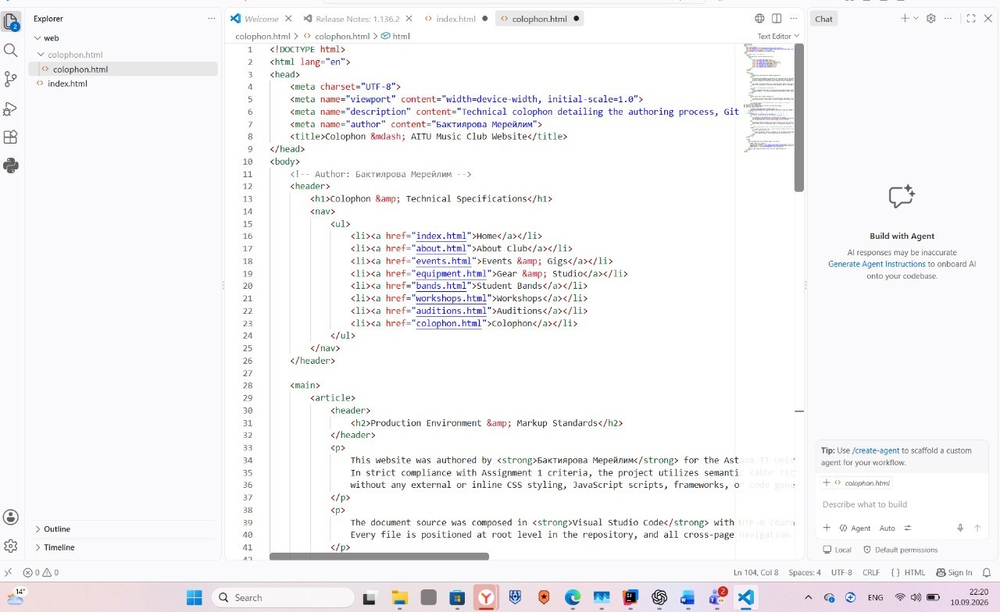

This website was authored by Бактиярова Мерейлим for the Astana IT University student community as part of the Introduction to Web Technologies curriculum.
In strict compliance with Assignment 1 criteria, the project utilizes semantic HTML5
without any external or inline CSS styling, JavaScript scripts, frameworks, or code generators.
The document source was composed in Visual Studio Code with UTF-8 character encoding.
Every file is positioned at root level in the repository, and all cross-page navigation links use strict relative file paths.

Figure 1: Local editor environment during validation and git revision staging.
Git Routine & Terminal Commands
To maintain revision history and meet multi-day submission requirements, file revisions were staged through the integrated terminal.
Press Ctrl + ` to launch the command line interface, then execute the following sequence:
git status
git add index.html colophon.html
git commit -m "feat: complete semantic structure for index and colophon"
git push origin main
Terminal output confirmation from Git client:
[main e5f6a7b] feat: complete semantic structure for index and colophon. 2 files changed, 260 insertions(+)
Standards Verification & Validation
All documents in this repository are verified using the official
W3C Nu HTML Checker.
The markup produces zero errors and zero warnings across all sections.
Deprecated presentation elements like <font> and <center> were omitted.
Visual layout, colors, and responsive layouts will be added in Assignment 2 via external CSS.